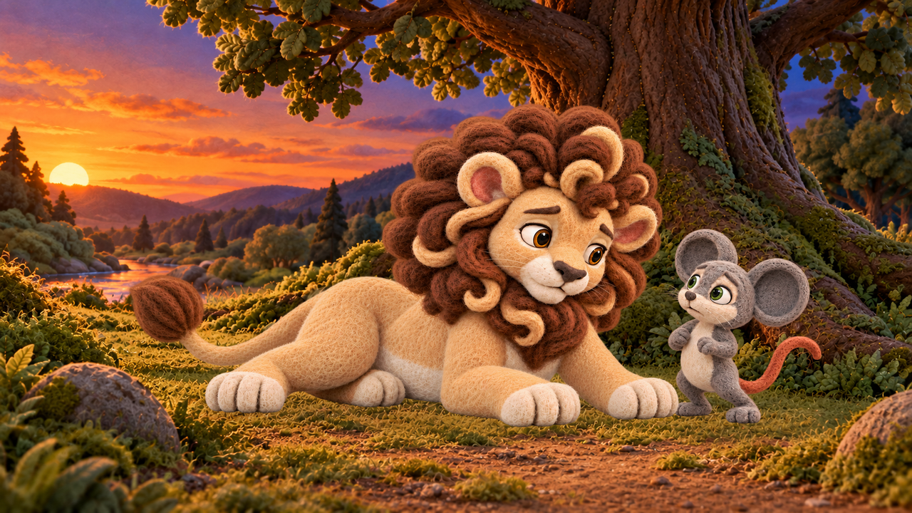

S08-L001-B01-I01
a5f2dff0e0bba3e1e942f18cb8f2a6c1ee3bab39317884364104b10d57987928
Native source
1280×720 fitted preview; technical and art review remain separate.
Native source bytes preserved. Red envelope is proposed review area, not a valid paw transplant. No paid call/GPU/retry performed.
L016 native paw overlay · L001 reference overlay · Concrete proposals · Exact inventories
a5f2dff0e0bba3e1e942f18cb8f2a6c1ee3bab39317884364104b10d57987928
Native source
1280×720 fitted preview; technical and art review remain separate.
516ea912c1a726927232e3e6df83a7e7f9eb3a3f54719e24a148f60c6dd94604
Native source
1280×720 fitted preview; technical and art review remain separate.
01a5b73a4becfe740cdc5ad00b47fee02375b1aef4545e295ef4b97e6e6488c2
Native source1280×720 fitted preview; technical and art review remain separate.
f1670da835f057e10b2d3c3b51e4a94adeaf8ffe01b0c80e92a4ed5f7199fcd8
Native source
1280×720 fitted preview; technical and art review remain separate.
4888ccf00b2fc76573b3397763f5fd12cee775b90129f880cf2204bb5ad1b8f3
Native source1280×720 fitted preview; technical and art review remain separate.